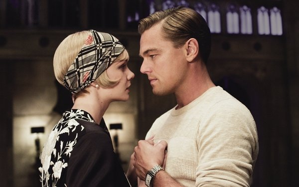
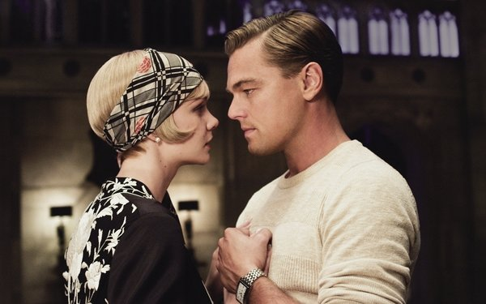

누구나 삶에 적어도 한 번은, 세상의 그 무엇과 비교할 수 없을 정도로 찬란하고 눈부시게 빛나는 순간이 온다. 시간이 흘러 빛이 사그라들고 꺼져 그 밝음을 잃어도 아름다운 날들은 인생 속에 남아 우리를 끌어당긴다. 그러한 순간들을 추억 속의 과거로 남겨놓은 채 남은 길을 걸어가는 사람이 있는 반면에, 어떤 이들은 자신이 빛나던 순간에 사로잡혀 자신의 모든 것을 던져버린다. 개츠비가 그랬고 그것이 닉이 개츠비를 위대하다고 말하는 이유일 것이다.
1920년대, 미국의 동부로 온 닉 캐러웨이는 그의 친척 데이지와 톰 부부를 만난다. 데이지의 저택과 만 하나를 두고 떨어져 사는 닉의 옆집엔 매주 성대한 파티를 여는 부자 개츠비가 산다. 개츠비와 친해진 그는 개츠비가 성대한 파티를 여는 이유가 5년 전 헤어진 그의 옛사랑 데이지를 만나기 위해서였다는 것을 알게된다. 데이지와 만난 개츠비는 그녀와 꿈같은 시간을 함께하지만, 데이지의 남편 톰은 그들을 막으려 하고, 개츠비의 과거가 그의 발목을 잡는다. 그러나 그는 포기하지 않는다.
작가는 근본적인 결핍을 그대로 놔둔 채 다른 종류의 것들로 그 구멍을 메우려 하는 것이 얼마나 부질없고 또 위험한 일인지 보여준다. 이러한 주제는 등장인물 뿐만 아니라 소설 전체를 관통한다. 소설 속 개츠비와 닉을 제외한 거의 모든 인물들은 마음의 어느 한구석이 텅 비어 있었다. 각자의 채워지지 않는 부분을 채우려 톰은 바람을 피우고 터무니없는 이야기들을 믿었으며, 조던은 골프 챔피언이 되기 위해 자신의 양심을 포기했다. 더이상 자신의 사랑이 금전적 욕구를 채워주지 못한다는 것을 깨달은 머틀은 달리는 차에 몸을 던졌다. 오직 -위대한- 개츠비만이 자신이 원하는 꿈을 피하지 않고 정면으로 맞섰다.
위대한 개츠비의 주요 인물들은 모두 서부 출신이었으며 동부의 빛과 그림자에 적응하지 못한 채로 그들의 꿈처럼 서서히 무너져 갔다. 그들의 실상은 그들의 웃음소리처럼 밝지만 너무나도 허무했다. 위대한 개츠비를 영화로 먼저 보았던 입장으로써 이 작품을 미국 황금기의 번쩍이는 화려함만을 보여주는 작품이라고 기억되지는 않았으면 한다. 결국 개츠비를 죽인 것은 그 화려함의 이면에 감춰진 공허함과 무책임함이었기 때문이다.